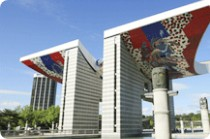
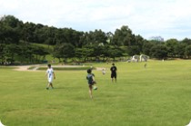
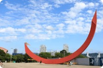
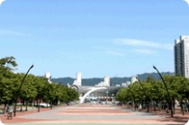
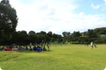
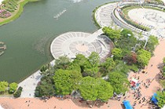

공연장안내

평화의 광장
88서울올림픽대회 상징조형물인 높이 24m의 세계평화의문이 우뚝 서있는 평화의광장은 약 28,000㎡ 규모의 넓은 대리석 광장으로 주변에 올림픽프라자, 수변무대 등이 인접하고 있으며 지하철 8호선 몽촌토성역이 광장 입구에 위치하고 있어서 대중교통 이용이 매우 편리합니다.
면적 약 28,000㎡ 용도 기념행사, 야외공연, 건강달리기대회, CF촬영 등
위치보기

88마당
88잔디마당은 약 33,000㎡ 규모의 넓은 잔디광장으로 전통 민속놀이가 가능하며 중앙에는 노천무대가 있어 대규모 야외공연 등을 할 수 있으며, 주변의 느티나무숲은 가족단위의 휴식공간을 제공하고 있습니다.
면적 약 33,000㎡ 용도 대형 콘서트, 어린이 사생대회 등
위치보기

한얼광장
동1문 만남의광장과 연결되어 있는 광장으로 제1·2체육관 사이에 위치하고 있어 체육관과 연계한 행사 등에 이용하시기에 아주 좋습니다.
면적 약 12,000㎡ 용도 건강달리기 대회, 소규모 이벤트, 체육관 연계행사 등
위치보기

만남의 광장
직사각 형태로 길게 뻗은 만남의광장은 양쪽에 울창한 가로수와 식당, 스넥점 등 편의시설이 골고루 갖추어져 있어서 행사를 진행하기에 편리한 장소입니다.지하철 5호선 올림픽공원역이 바로 옆에 위치하고있어 대중교통 이용이 편리합니다.
면적 약 10,700㎡
용도 기념행사, 박람회, 길거리농구대회, CF촬영 등
위치보기

피크닉 광장
자연경관이 잘 조성된 도심속의 휴식공간으로서 올림픽공원을 방문하는 많은 유아원생들의 놀이장소로 각광받는 곳입니다.
면적 약 5,950㎡
용도 어린이.청소년 소풍, 사생대회 등
위치보기

수변무대
몽촌해자.88호수수변무대는 모든 주변의 뛰어난 경관을 배경으로 야외공연 연주회장, CF촬영 등 다양한 행사장으로 각광을 받고 있습니다.
몽촌해자 면적 약 10,700㎡
몽촌해자 용도 기념행사, 박람회, 길거리농구대회, CF촬영 등 88호수 면적 약 10,700㎡ 88호수 용도 기념행사, 박람회, 길거리농구대회, CF촬영 등
위치보기